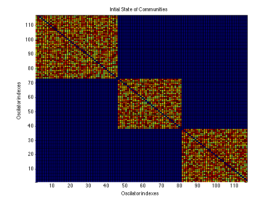
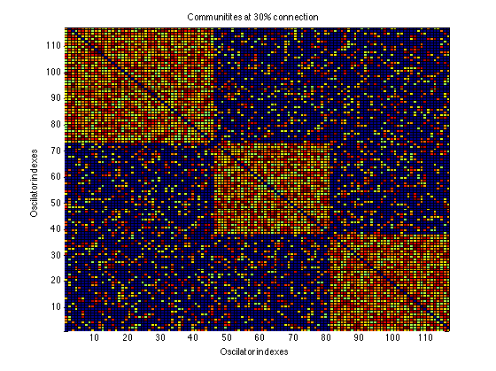
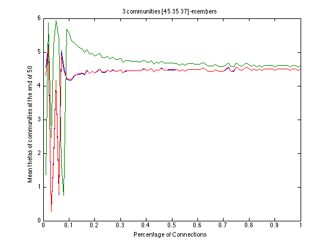

Contents
Synchronizing Mutiple Communities of Connected Oscilators
In this problem we attempt to find the minimum number of connections required for synchronization of mutiple communites of mutally connected oscilators The communities are organized according to the Kuramoto model*
Preparing the General Metrics for the Communities
time span
T = 50; dt = T/20;
number of communities
N = 3;
maximum and minimum number of oscilators in each community
minmemb = 30; maxmemb = 50;
set the number of oscilators for each community
NumMemb = zeros(1, N); for i = 1 : N NumMemb(i) = randi([minmemb maxmemb]); end; totalOsc = sum(NumMemb);
natural frequency for communities with random mean between 1 and 4
globalW = []; for i = 1 : N freqMean = randi([1 4]); W = 0.2*randn(NumMemb(i),1)+freqMean; globalW = [globalW; W]; end;
starting phases for communities
globalTh = []; for i = 1 : N Th = 2*pi*rand(NumMemb(i), 1); globalTh = [globalTh; Th]; end;
Creating Adjecency Matrices for Each Community and Putting Them Together
probability of coupling
probability of coupling will vary depending on whether we want to study densly or loosely connected communitites
Pk = 1;
%Coupling - refelcts the connectivity and the value of coupling coeeficient at each %connection globalAdj = []; for i = 1 : N NumOsc = NumMemb(i); CoupDiag = zeros(NumOsc,NumOsc); NCoup =round(NumOsc^2*Pk); NnonCoup = NumOsc^2 - NCoup; %adejcency matrix 1 K = [20*rand(NCoup,1)+20; zeros(NnonCoup,1)]; % Generate a random index idx = randperm(NumOsc^2); % Select randomly and reshape K = reshape(K(idx),[NumOsc,NumOsc]); %make an upper triangualr matrix in order for the resulting matrix to be symmetric K = triu(K, 1); K = K + K'; globalAdj = blkdiag(globalAdj, K); end;
plotting the inital state of the communities
figure pcolor(flipud(globalAdj)) title('Intial State of Communities'); xlabel('Oscilator indexes'); ylabel('Oscilator indexes');
Adding Connections Between Communities
%data structure that collects mean Theta values at the end of time T %allowed for synchronization meanThetas = zeros(N,100); %start increasing the percentage of connections from 0 to 100 for p=0.01:0.01:1 %establish the set of connection between all communities if p == 0.3 globalAdjatP = globalAdj; end; for j = 1:N %connect communities K with communities J for k = j+1:N %create the adjecency matrix for 2 communities numRows = NumMemb(j); numColumns = NumMemb(k); numElements = numRows*numColumns; CoupDiag = zeros(numRows,numColumns); %number of nonzero elements NCoup =round(numElements*p); %number of zero elements NnonCoup = numElements - NCoup; % generate a vector with an appropriate number of sero and % nonzero entries K = [20*rand(NCoup,1)+20; zeros(NnonCoup,1)]; %Generate a random index idx = randperm(numElements); %Select randomly and reshape K = reshape(K(idx),[numRows,numColumns]); %put te new matrix into the appropriate place in the adjencency %matrix if j == 1 startRow = 1; else startRow = sum(NumMemb(1:(j-1)))+1; end; endRow = sum(NumMemb(1:j)); startColumn = sum(NumMemb(1:(k-1)))+1; endColumn = sum(NumMemb(1:(k))); globalAdj(startRow:endRow, startColumn:endColumn) = K; globalAdj(startColumn:endColumn, startRow:endRow) = K'; end; end; %integrate the resulting matrix for T [time, theta] = ode45('Theta_rhs_K_inside', [0:dt:T], globalTh, [], globalW, globalAdj, totalOsc); %calculate the mean value of last theta for each group theta = theta'; theta = mod(theta, 2*pi); lastTheta = theta (:, end); means = zeros(N, 1); startIndex = 1; for l = 1:N means(l) = mean(lastTheta(startIndex:sum(NumMemb(1:l)))); startIndex = sum(NumMemb(1:l)); end; meanThetas(:, int32(p*100)) = means; end;
visualization of communities at 30% connectivity between communities
figure pcolor(flipud(globalAdjatP)) title('Communitites at 30% connection'); xlabel('Oscilator indexes'); ylabel('Oscilator indexes');
plotting
%seprate the thetas into different communities and compute their mean percent_connections = [0.01:0.01:1]; figure plot (percent_connections, meanThetas); xlabel('Percentage of Connections'); time_label = int2str(T); ylabel(['Mean thetas of communities at the end of',' ',time_label]); title([int2str(N),' ','communities',' ', mat2str(NumMemb),' ','-members']);